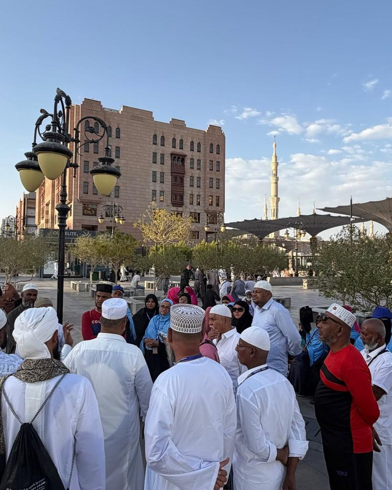
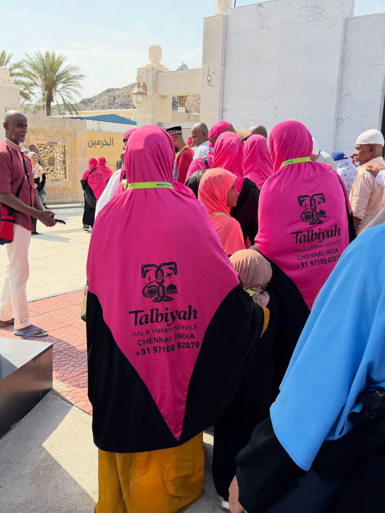
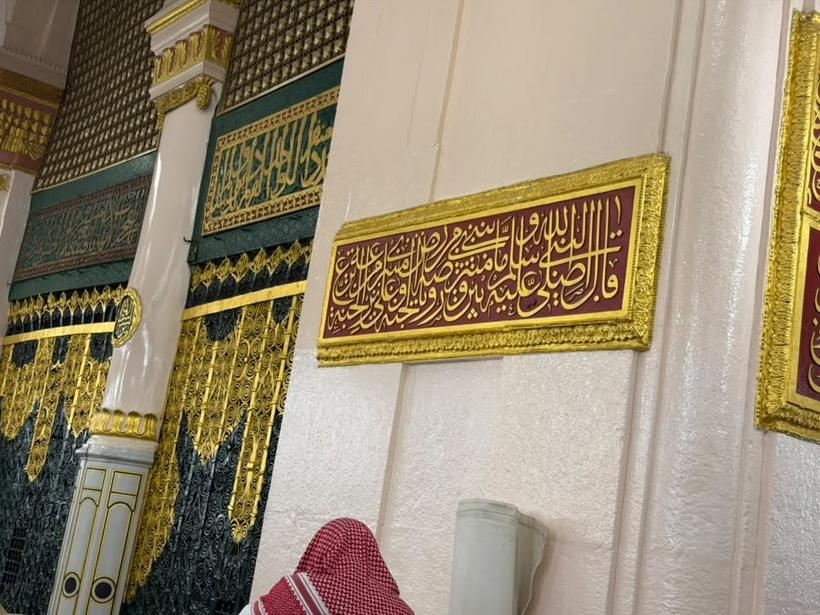
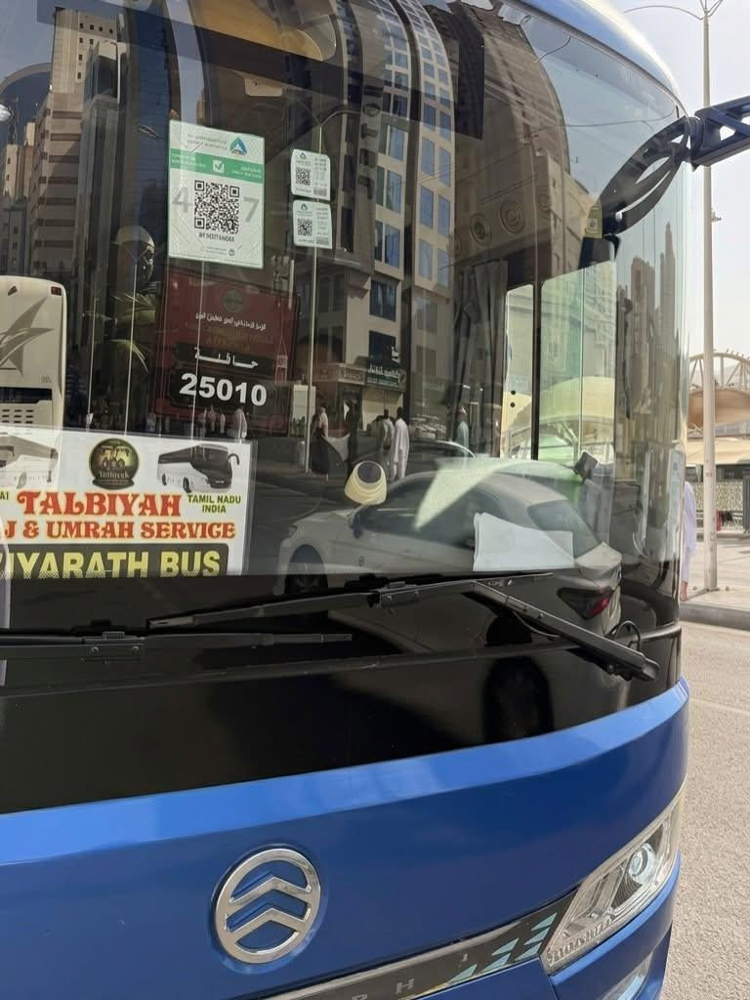
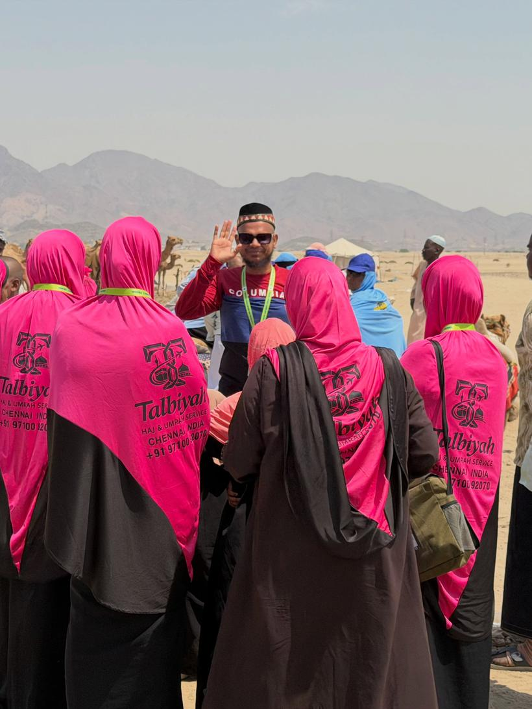
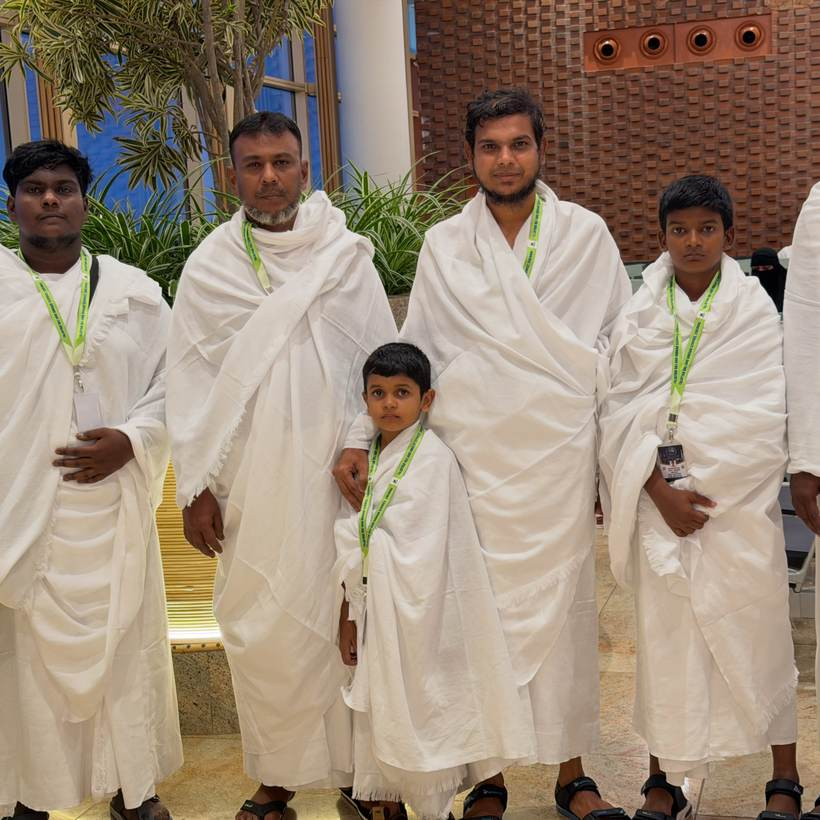
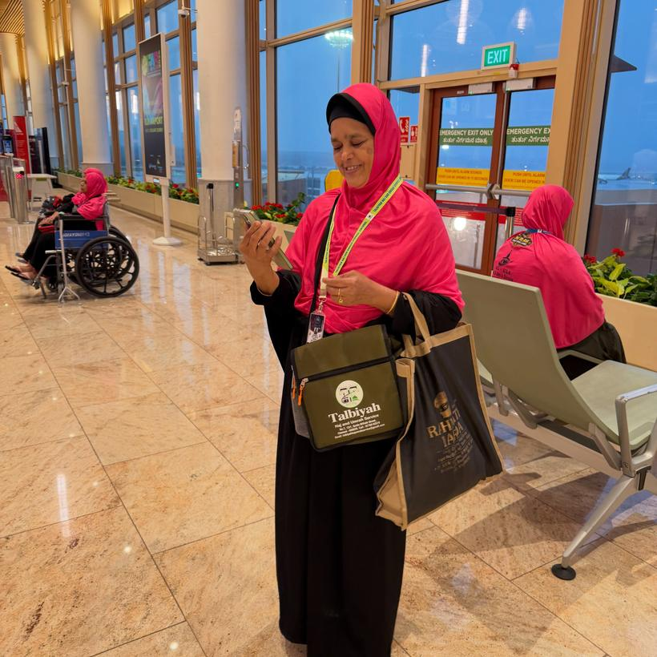
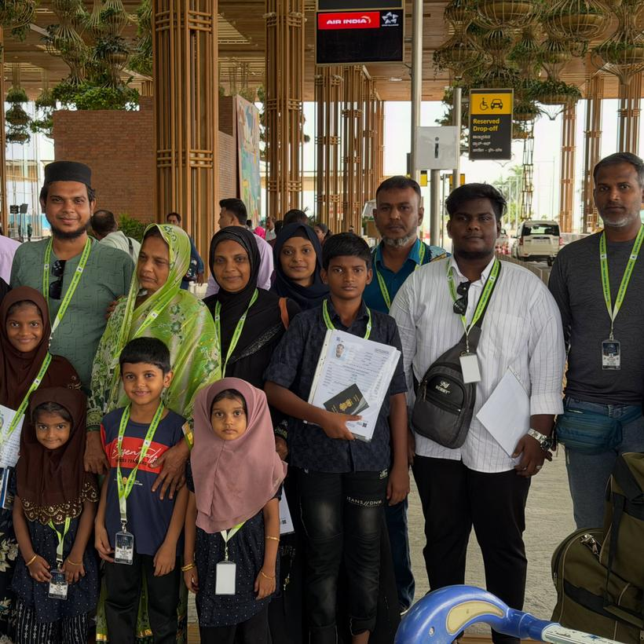

Umrah & Haj Visa
Application prepared, filed and tracked. You are told the day it is issued — not chased for updates.
Ask about visasلَبَّيْك
Talbiyah
لَبَّيْكَ اللَّهُمَّ لَبَّيْك
Fifteen years of Haj and Umrah out of Chennai — visa, ticketing, passport, packages and guided ziyarat, arranged and accompanied in person by Moulavi Alhaj B. Mohamed Sadath.
The guide
For fifteen years, Moulavi B. Mohamed Sadath has arranged Haj and Umrah for families across Chennai — and gone with them. The paperwork is handled before you leave; the questions are answered while you are there.
Your Journey is Our Responsibility. The promise this service was built on
What we handle
One office for the whole file — so you are never sent from a visa agent to a ticketing agent to a passport tout.
Application prepared, filed and tracked. You are told the day it is issued — not chased for updates.
Ask about visasDirect and connecting fares from Chennai, held and issued together with the group so no one flies alone.
Ask about ticketsNew applications, renewals, corrections and re-issue — with the document checklist done properly the first time.
Ask about passportsFlights, hotels, transfers, ziyarat and guidance in one price. Three tiers, so the distance from the Haram is your choice.
See the packagesScheduled family and community groups travelling together from Chennai, with the guide on the same flight.
Next departureThe sites of Makkah and Madinah visited with context and an unhurried pace — not a bus window and a checklist.
Where the ziyarat goesUmrah packages
The difference between them is the hotel — never how closely you are looked after. Both travel on the same flight, with Moulavi Sadath alongside the group throughout.
30 September – 14 October 2026Departing Chennai with Oman Air · 15 days
Most chosen
The usual family choice
₹1,15,000Per person, all inclusive
Closest to the Haram
₹1,49,000Per person · four-bed sharing
Arranged for your own dates
Price on requestDepends on season & airfare
Given to every pilgrim before departure
Seats are limited and released in the order they are confirmed. Message us for the current availability and the payment schedule.
Years guidingSince 2011
Pilgrims guidedAcross Haj and Umrah seasons
Group departuresChennai to Jeddah and Madinah
In Tamil
புறப்படும் தேதி
30 செப்டம்பர் 2026
திரும்பும் தேதி
14 அக்டோபர் 2026
சென்னையிலிருந்து ஓமான் ஏர் விமானத்தில்
பேக்கேஜ் விலை
₹1,15,000 மட்டுமே
ஹில்டன் பேக்கேஜ்
₹1,49,000 மட்டுமே
ஒரு அறையில் நான்கு பேர்
பேக்கேஜில் அடங்கியவை
மௌலவி அல்ஹாஜ் பி. முகமது சாதத் அவர்கள் குழுவுடன் நேரில் பயணம் செய்கிறார்கள். மன நிறைவான சேவை — நிறுவனரின் நேரடி பார்வையில்.
The journey
01
Come to the office or message us. We check your dates, your budget and who is travelling with you.
02
Passport, photographs and vaccination record. You get an exact list — nothing vague, nothing missing on the day.
03
Your application is filed and tracked. We tell you the moment it is issued, and hold your passport safely until you fly.
04
Tickets, baggage rules, ihram and a briefing before you leave Chennai — so nobody boards unsure of what happens next.
05
Arrival, hotel, and your Umrah performed step by step — tawaf, sa'i and halq — with a guide walking it beside you.
06
Ziyarat of the Prophet's Mosque ﷺ and the sites around it, at a pace that leaves room to sit and pray.
07
The flight home — and the same number still answering afterwards, whether it is a document or a question about your next journey.
Scroll to follow the journey
Guided ziyarat
Ziyarat is where most groups are short-changed — a bus window, ten minutes, on to the next stop. Ours travels in our own coach, with Moulavi Sadath telling you what happened at each place before you get down, and time left to sit and pray. Access to some sites changes with Saudi regulations and the season; we tell you what is open before you travel, not after.
The hill holding the cave of Hira, where the first revelation came. Viewed and explained from the ground — the climb is long and steep, and nobody is pushed into it.
The cave of the Hijrah, where the Prophet ﷺ and Abu Bakr sheltered on the way to Madinah.
The plains of Haj, crossed and explained — so that if you return for Haj, the ground is already familiar.
The miqat outside the Haram boundary, for those entering ihram again for a second Umrah.
The old burial ground of Makkah, visited from outside.
The Prophet’s Mosque ﷺ. We help with the Rawdah booking on the Nusuk app and explain the timings, which change often.
The companions’ burial ground beside the mosque.
The first mosque built in Islam, and the prayer offered there.
Where the qiblah turned towards Makkah mid-prayer.
The mountain and the resting place of the martyrs, with the account of the battle told on the spot.
The trench of Khandaq, and a stop where dates and Madinah produce are bought.
Ziyarat is included in both October packages. For a private group, the route and the pace are yours to set — ask us on WhatsApp.
Why families come back
Visa, ticketing, passport and package handled in the same place, by the same person. Nothing is subcontracted to a stranger.
Moulavi Sadath does not wave the group off at Chennai airport. He is on the flight, at the hotel, and beside you during tawaf.
Tamil, Urdu and English — before you go, and on WhatsApp while you are there. No call centre, no ticket number.
What is included is said out loud before you pay, and what is not included is said just as clearly. No surprises at the airport.
In their words
Families from Chennai, Ambur, Kilakarai and Vaniyambadi who travelled with Moulavi Sadath, in their own words.
I had no passport when I first walked into the office on Qaide Millath Street. Everything — passport, visa, tickets — was done from that one room, and I was told at each stage where my file had reached. Nobody sent me anywhere else.
My mother is seventy-three and cannot walk long distances. Moulavi Sadath arranged a wheelchair at both airports and stayed with us through the tawaf. I was worried for weeks before we left, and I did not have to worry once we were there.
This was the third time our family has travelled with Talbiyah, and the second for Haj. That is the whole answer. The same person answers the phone, and he is on the same flight as you.
The ziyarat in Madinah was unhurried — he explained each place and gave us time to sit and pray, not ten minutes and back to the bus. Two months after returning I called about a passport renewal and he still helped.
From recent departures
Not stock photographs. Every picture below is from a Talbiyah departure out of Chennai.








Questions we are asked most
Once your documents are complete, an Umrah visa is usually issued within a few working days. Delays almost always come from an incomplete file — a passport too close to expiry, or photographs that do not meet the specification — which is exactly what we check before submitting. Haj is different: it runs on an annual application window through the Haj Committee of India and approved organisers, so it must be planned months ahead. Ask us for the current season's dates.
A passport valid for at least six months beyond your travel date, recent colour photographs to the required specification, and a meningitis (ACWY) vaccination certificate. Depending on who is travelling, we may also need proof of relationship for family members, and identification for children on a parent's booking. We give you the full list in writing at registration — and we tell you which ones we can arrange for you.
Saudi requirements on this have changed in recent years, and women now travel for Umrah in circumstances that were not previously permitted — often as part of an organised group. Because the rules are revised from time to time and the fiqh position matters as much as the visa rule, we would rather answer this for your specific situation than print a blanket answer here. Call or message Moulavi Sadath and he will go through both sides of it with you.
A group departure costs less, travels on a fixed date, and means you are never navigating alone — the guide handles the transfers, the rituals and anything that goes wrong. A private booking lets you choose your own dates, hotel and pace, and suits families with very young children, elderly parents, or particular medical needs. Most first-time pilgrims are better served by the group; we will say so plainly if we think that is you.
Return airfare from Chennai, the Umrah visa, hotel accommodation in Makkah and Madinah, airport and inter-city transfers, and guided ziyarat. What varies by tier is the hotel's distance from the Haram and how many share a room. Things like extra baggage, personal expenses and travel insurance are quoted separately so you can see them — we will walk through the full inclusion list before you pay anything.
It is the most common situation we deal with, and it is the reason this service exists in the form it does. If you have no passport, we start there. Before departure you get a briefing covering immigration, baggage, ihram and what happens on arrival. On the journey the guide is with the group throughout. You are not expected to know anything in advance except your intention.
Contact
The office is on Qaide Millath Street. Message first if you would like Moulavi Sadath to be there in person.
Enquiry
Fill this in and it opens WhatsApp with your details already written out. Nothing is stored on this website.